6R Refresher Part 6: Summarizing and Visualizing Data
Created by Mauricio Cantor, with modifications by Laura J. Feyrer, Ana Eguiguren, and Reid Steele
This section covers basic summary statistics and plotting.
NOTE: On refresher pages, some code lines will be commented out to avoid file structure issues surrounding saving files, downloading packages, and changing working directories.
6.1 Viewing and summarizing data
Base R contains a variety of functions for examining and summarizing data:
# 6. Summarizing and visualizing data -------------------------------------------------------# Basic functions for summarizing your data# This are the basic functions to explore your data. Their names are pretty self-explanatory: # mean(), var(), sd(), min(), max(), range(), sum(). # They operate in the entire objectnum_vector <-rnorm(50, mean =20, sd =10)num_vector
The family of apply() functions is designed to apply functions across the rows/columns of a matrix/data frame. They are a little old school nowadays (as opposed to the hip new tidyverse pipes covered in section 9), but consider using them in your workflows if they make sense to you. A lot of coding is about finding your own style.
# Hint: the function 'apply()' is a nice way to #apply any kind of function to parts of you data frame, #matrix, array. It basically work like this:# apply(X, MARGIN, FUN), where X is the object; #MARGIN is 1(row) or 2(column); and FUN is the function ?apply # to explore examples
# available in the course excel files# the function 'tapply()' is the right tool for the job:# tapply(X, INDEX, FUN); same as before, but now INDEX # is the factor#first, transform into factorsscho$Location_f <-factor(scho$Location)scho$Order_f <-factor(scho$Order)tapply(scho$Fat, INDEX = scho$Location_f, FUN=mean)
Alaska Brazil Virginia
273.1200 61.8225 223.3725
# or the standard deviation of Fat..tapply(scho$Fat, INDEX = scho$Location_f, FUN=sd)
Alaska Brazil Virginia
399.8816 106.9835 365.0005
# and so on# Hint: Contingency tables - the 'table()' function# also indicates how many samples/categorytable(scho$Location_f) #This is particularly useful for plotting (see below)
Alaska Brazil Virginia
11 12 16
table(scho$Location_f, scho$Order_f)
Carnivora Chiroptera Edentata Insectivora Lagomorpha Marsupialia
Alaska 3 0 0 0 1 0
Brazil 0 8 1 0 0 0
Virginia 3 1 0 1 0 1
Primates Rodentia
Alaska 0 7
Brazil 1 2
Virginia 0 10
# this is even more useful when we have MORE than one category!!
6.3 Base R Plotting
Base R contains a variety of functions that can be used for plotting, see some examples below. R plots work a bit like building blocks. Once you generate a plot, you can use successive functions to add more elements onto the plot.
# 6b. Basic plotting ------------------# Let's cover the very basics of plotting in R: again, # we create objects, use functions and voilá!# We will not cover formatting details. # It's a bit of work to get a nice plot in R (by nice plot I mean one ready for publication). # Again, it's worthy anyway, because we get a script to generate the figure as many times you wish later. And you can share the code (or reuse it later)# Histograms and barplots: frequencyhist(scho$Fat)
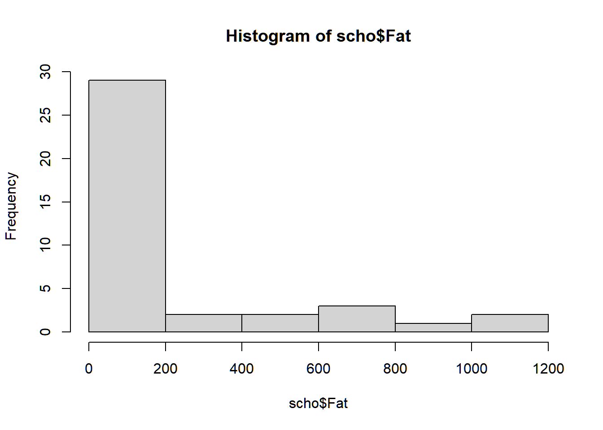
hist(scho$Fat, breaks=20) # a little more detail
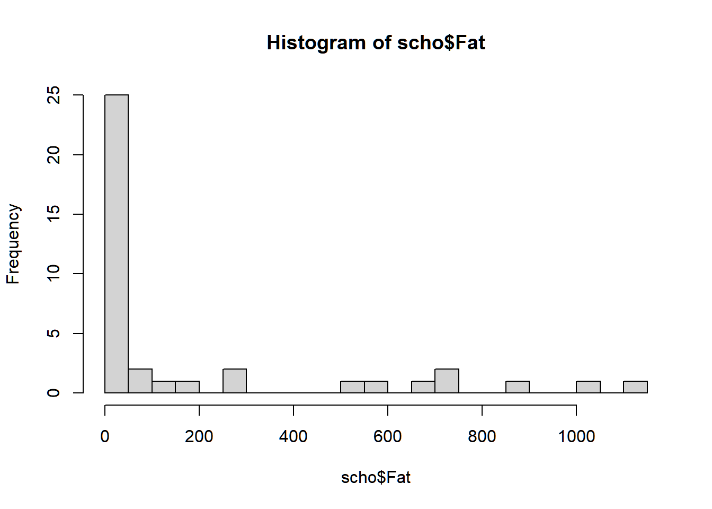
hist(scho$Mass, breaks=20) # a little more detail
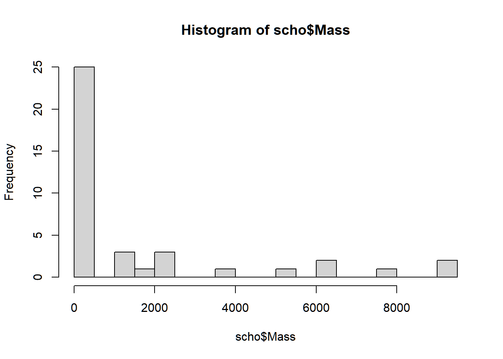
# Barplots for number of casesbarplot(table(scho$Location_f))
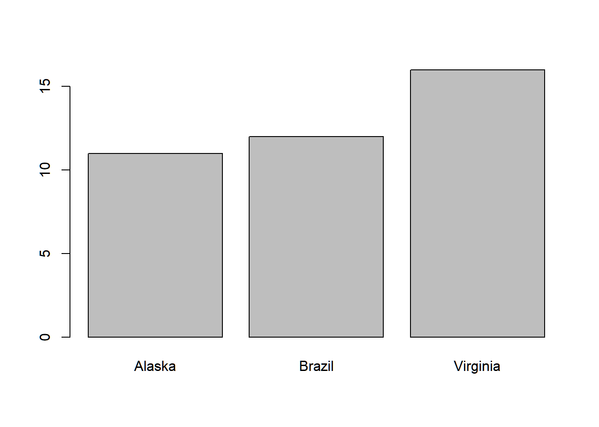
# Scatterplots (x vs y)plot(scho$Fat, scho$Mass) # plot where x = Fat, y = Mass
plot(scho$Mass ~ scho$Fat) # plot where x = Fat, y = Mass too
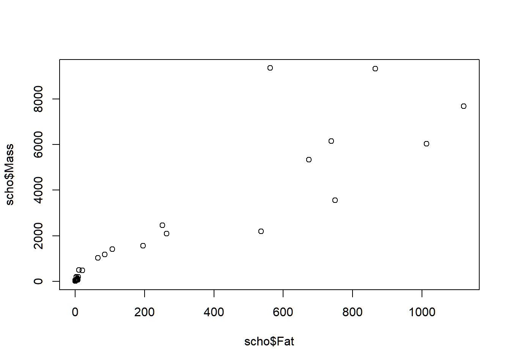
scatter.smooth(scho$Mass ~ scho$Fat) # add a trend line
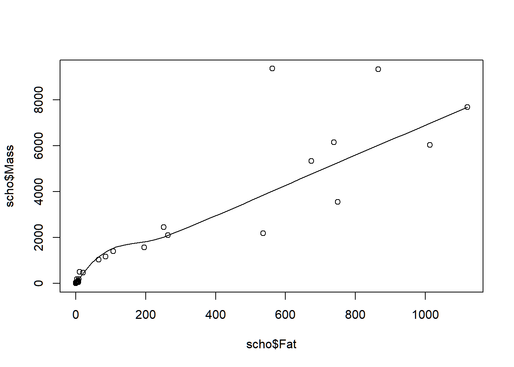
# Basic formattingplot(scho$Fat, scho$Mass, col ="blue", cex =1, pch =3)
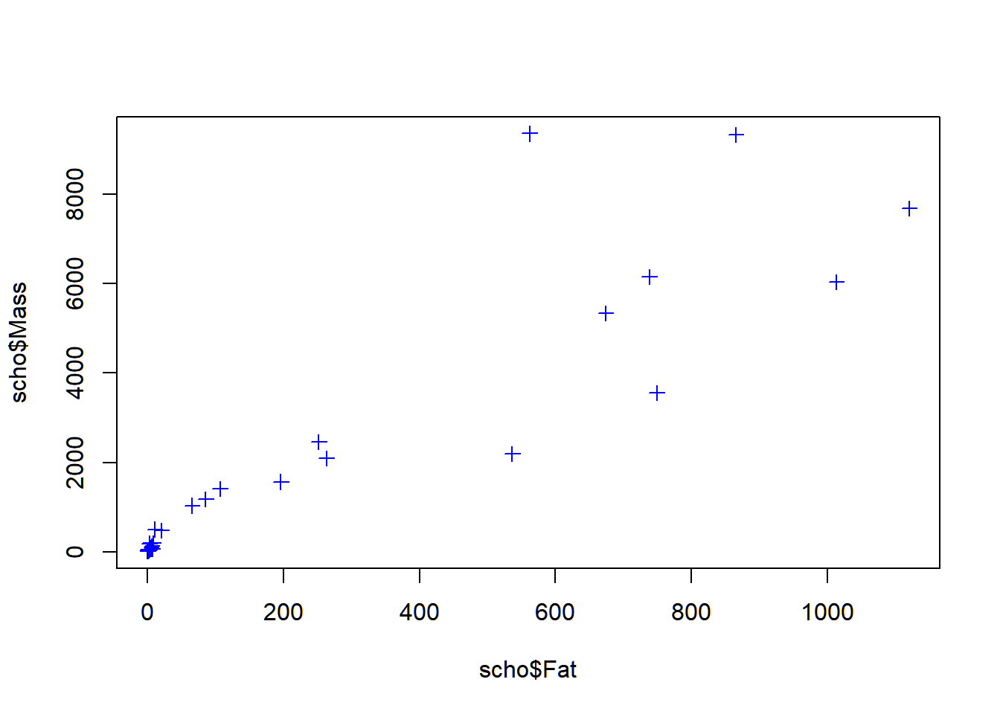
# col = color (numbers or names, google options)# cex = relative size# pch = type of point - PLAY withe the optionslevels(scho$Order_f)
# add only carnivores to see if there's a patternplot(scho$Fat[which(scho$Order_f =="Carnivora")], scho$Mass[which(scho$Order_f =="Carnivora")], col =2, cex =1, pch =19)
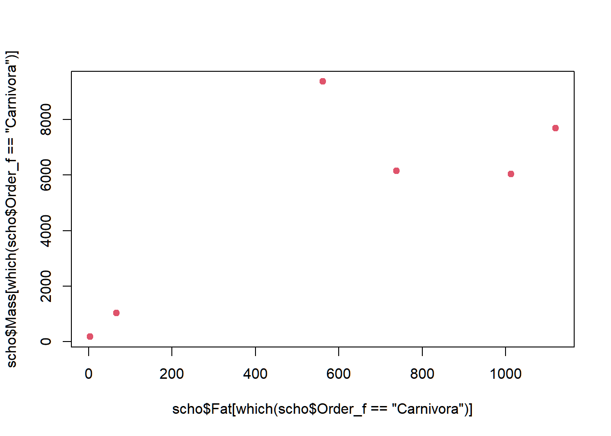
# if I want this to go over my previous graph, # I can add pointsplot(scho$Fat, scho$Mass, col =1, cex =1, pch =19)points(scho$Fat[which(scho$Order_f =="Carnivora")], scho$Mass[which(scho$Order_f =="Carnivora")], col =2, cex =1, pch =19)
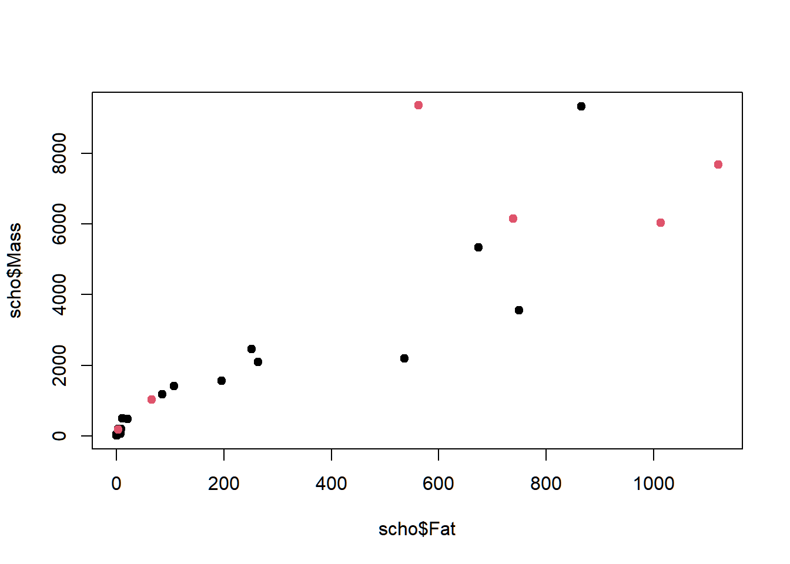
# Color points by categoryplot(scho$Fat, scho$Mass, col = scho$Order_f, cex =1, pch =19)
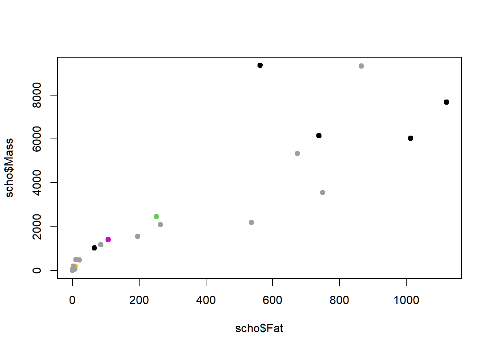
#turns each factor level into a number that corresponds to a color# Box plotboxplot(scho$Mass)#one variable (numerical)
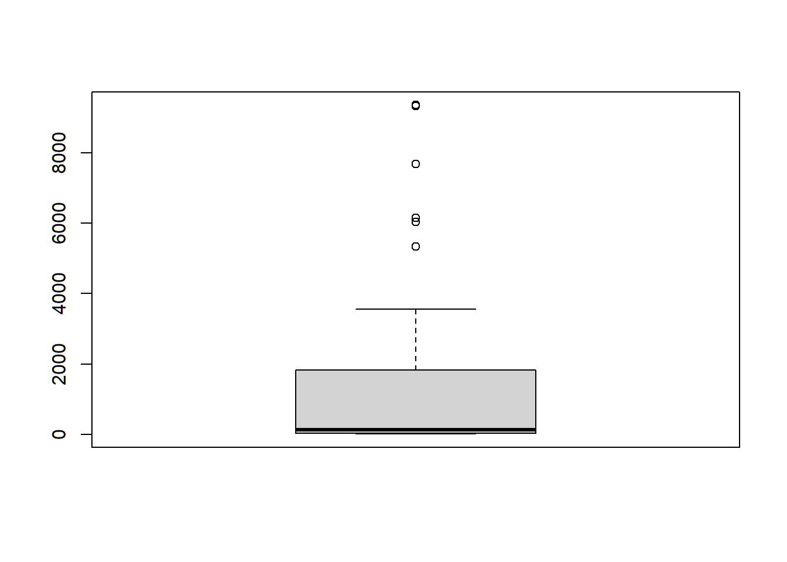
boxplot(scho$Mass ~ scho$Location_f)# One numerical variable as a function of a categorical variable
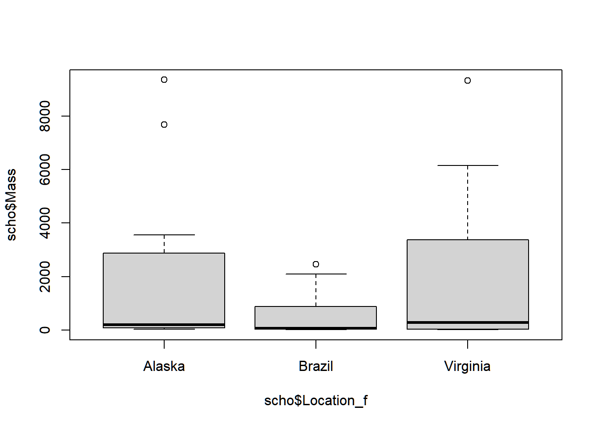
?boxplot# Density plotsplot(density(scho$Fat))
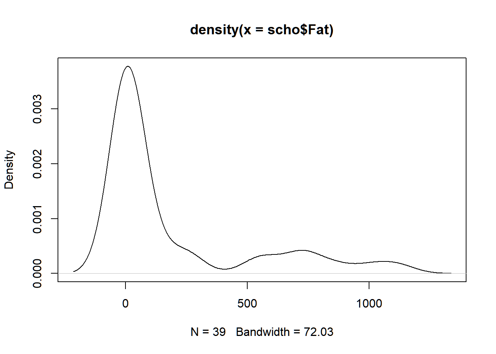
6.4 ggplot2
Alternatively, ggplot2 is a plotting package which is part of the tidyverse family that is designed to build plots more quickly (and ideally, prettily). Base plot and ggplot2 is very much a stylistic difference - you can (and should experiment with) build the same plots in either, but you may have a preference one way or the other. ggplot2 is generally more restrictive than R base plot, which can be frustrating in some cases, but may also be beneficial in others, as it can prevent you from making certain mistakes (e.g. mixing up your data and your legend).
# 6 BONUS ~~~ Brief intro to ggplot----# taken and modified from Rebecca Barter:# URL: http://www.rebeccabarter.com/blog/2017-11-17-ggplot2_tutorial/# 1. install & upload package# installl.packages("ggplot2")library(ggplot2)#first install this package# 2. BONUS! you can upload data directlygapminder <-read.csv("https://raw.githubusercontent.com/zief0002/miniature-garbanzo/main/data/gapminder.csv")# this will fail if you are not connected to internet though# 3. see what is in therehead(gapminder)
country region income income_level life_exp co2 co2_change
1 Afghanistan Asia 2.03 Level 1 62.7 0.254 increase
2 Albania Europe 13.30 Level 3 78.4 1.590 increase
3 Algeria Africa 11.60 Level 3 76.0 3.690 increase
4 Andorra Europe 58.30 Level 4 82.1 6.120 decrease
5 Angola Africa 6.93 Level 2 64.6 1.120 decrease
6 Antigua and Barbuda Americas 21.00 Level 3 76.2 5.880 increase
population
1 37.2000
2 2.8800
3 42.2000
4 0.0770
5 30.8000
6 0.0963
# 4. Start plot:# ggplots are built in layers, to which you add elements# the first bit is a "canvas" that holds the x and y axisggplot(gapminder, aes(x = income, y = life_exp))
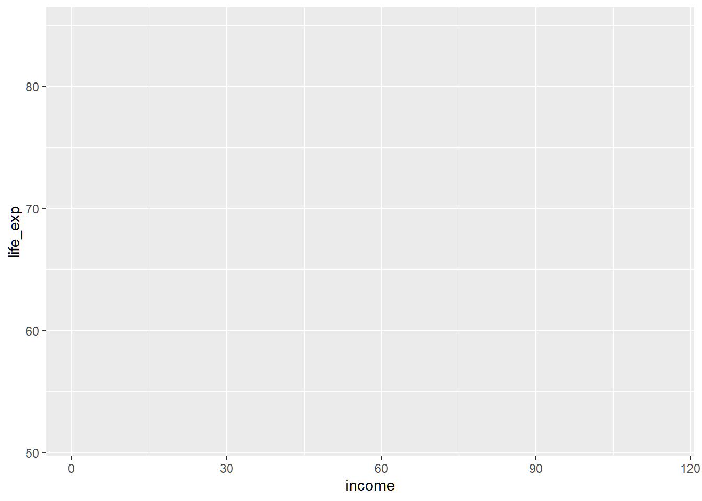
# we are telling the function to use the "gapminder dataset"# and to draw the x axis based on gdp/capita and y axis as life expectancy# but this is still a blank canvas# 5. Populate plot # start adding things by following your "canvas function" by a# + sign:p<-ggplot(gapminder, aes(x = income, y = life_exp)) +geom_point() # add a points layer on top# 6. Make things easier to see# you can modify the format of your points by adding # specifications within gemo_point() # alpha = transparency (0 - 1)# col = color (explore RColor Palettes for options)# size = point sizep +geom_point(alpha =0.5, col ="cornflowerblue", size =0.5)
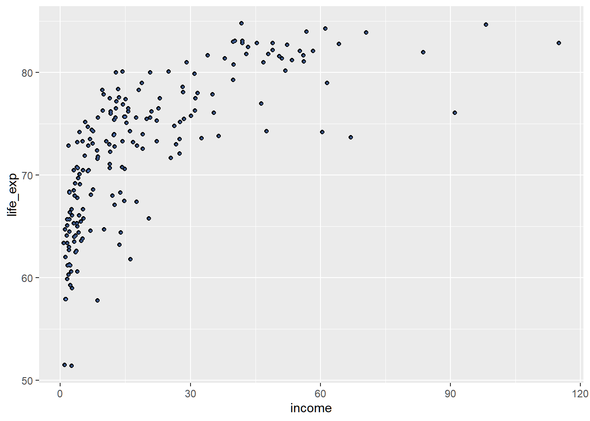
# you can also color each point by a category:# here, because we are plotting color based on a variabe, we# add it to the aes() input# so that now points are colored by continentggplot(gapminder, aes(x = income, y = life_exp, color = region)) +geom_point(alpha =0.5, size =0.7)
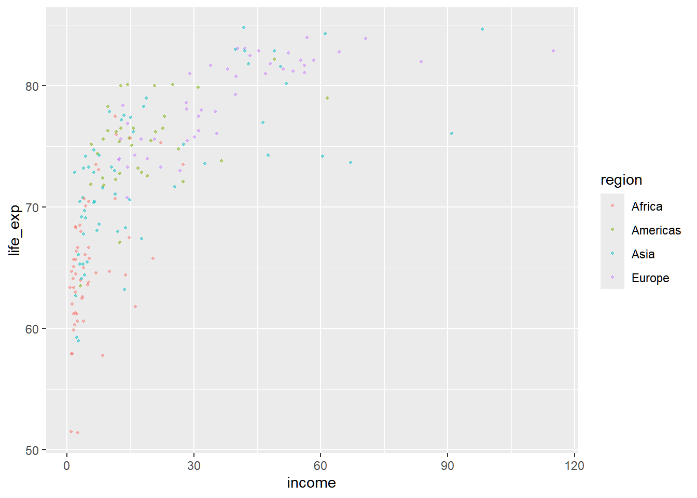
# you can also modify the size of points based on a variable# so that bigger points show larger populationsggplot(gapminder, aes(x = income, y = life_exp, , color = region, size = population)) +geom_point(alpha =0.5)
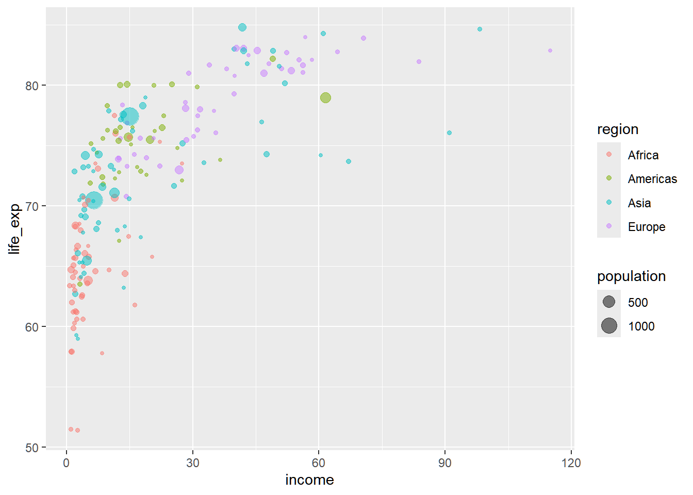
# To make things easier to see, we will look at# only one year at a timelibrary(dplyr)
Attaching package: 'dplyr'
The following objects are masked from 'package:stats':
filter, lag
The following objects are masked from 'package:base':
intersect, setdiff, setequal, union
# the dplyr package allows another way to access# bits of your data# this can be read as:# First, take "gapminder" data and THEN# filter out data for the americasgapminder_Am <- gapminder %>%filter(region =="Americas")summary(gapminder_Am)
country region income income_level
Length:35 Length:35 Min. : 3.17 Length:35
Class :character Class :character 1st Qu.:10.62 Class :character
Mode :character Mode :character Median :14.70 Mode :character
Mean :18.02
3rd Qu.:21.85
Max. :61.60
life_exp co2 co2_change population
Min. :63.50 Min. : 0.270 Length:35 Min. : 0.0524
1st Qu.:72.85 1st Qu.: 1.850 Class :character 1st Qu.: 0.4810
Median :75.50 Median : 2.460 Mode :character Median : 6.4700
Mean :75.24 Mean : 4.204 Mean : 28.5978
3rd Qu.:77.00 3rd Qu.: 4.445 3rd Qu.: 17.9500
Max. :82.20 Max. :31.300 Max. :327.0000
# first we replicate our previous plot# it is now a bit easier to see patternsggplot(gapminder_Am, aes(x = income, y = life_exp, color = co2_change , size = population)) +geom_point(alpha =0.5)
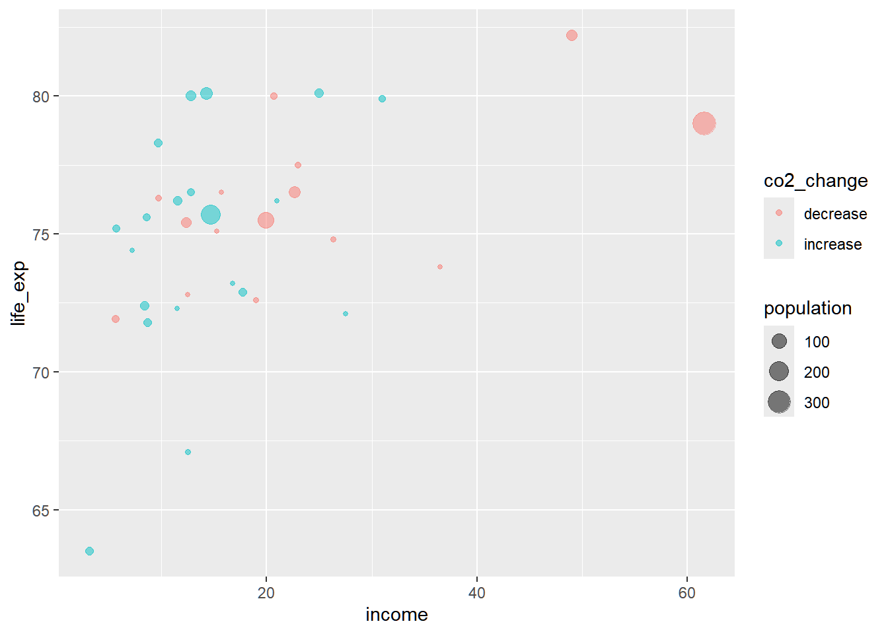
# because there is so much variation in income, it # may be easier to see it in a logarithmic scaleggplot(gapminder_Am, aes(x = income, y = life_exp, color = co2_change , size = population)) +geom_point(alpha =0.5) +scale_x_log10()# this prints the x axis in a log10
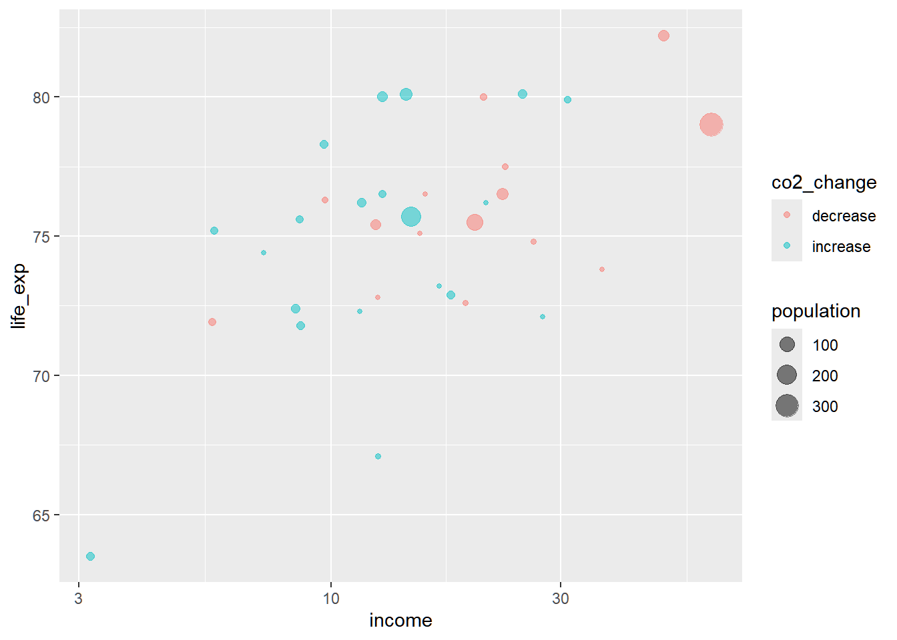
# you can now add more informative titles using the# + labs() elementggplot(gapminder_Am, aes(x = income, y = life_exp, color = co2_change , size = population)) +# add scatter pointsgeom_point(alpha =0.5) +# log-scale the x-axisscale_x_log10() +# change labelslabs(title ="Income versus life expectancy in the Americas",x ="Income per capita (log scale)",y ="Life expectancy",size ="Popoulation",color ="CO2 chage")
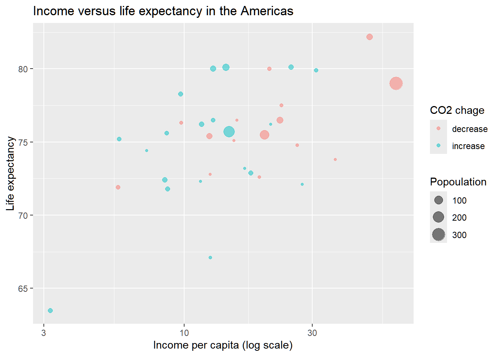
# and make things prettier by adding the# + themes() optionsggplot(gapminder_Am, aes(x = income, y = life_exp, color = co2_change , size = population)) +# add scatter pointsgeom_point(alpha =0.5) +# log-scale the x-axisscale_x_log10() +# change labelslabs(title ="Income versus life expectancy in the Americas",x ="Income per capita (log scale)",y ="Life expectancy",size ="Popoulation",color ="CO2 chage")+theme_classic()
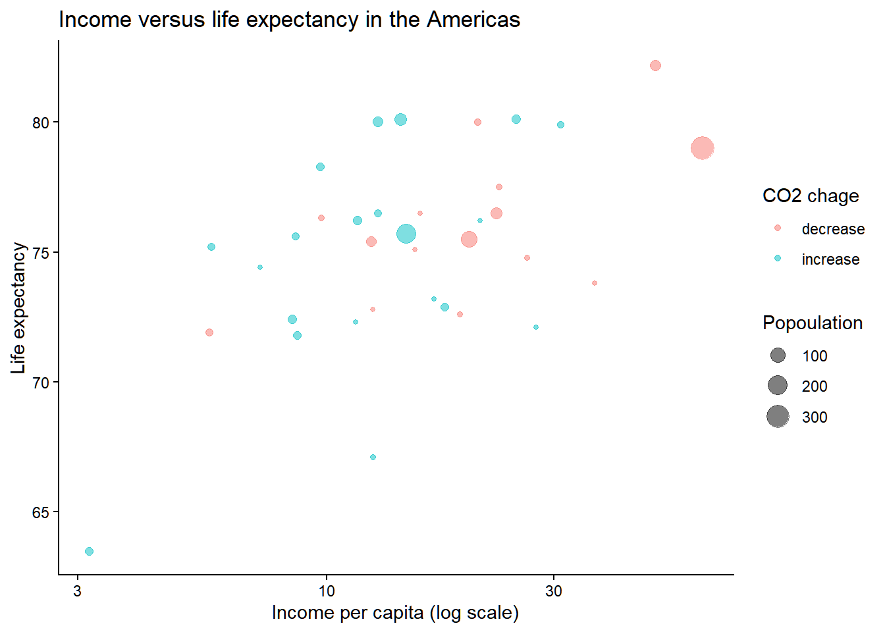
# add labels!# I want to know where Ecuador fits hereggplot(gapminder_Am, aes(x = income, y = life_exp, color = co2_change , size = population)) +# add scatter pointsgeom_point(alpha =0.5) +# log-scale the x-axisscale_x_log10() +# change labelslabs(title ="Income versus life expectancy in the Americas",x ="GDP per capita (log scale)",y ="Life expectancy",size ="Popoulation",color ="Continent")+theme_classic() +geom_text( data=gapminder_Am %>%filter(country =="Ecuador"), # Filter data firstaes(label=country))
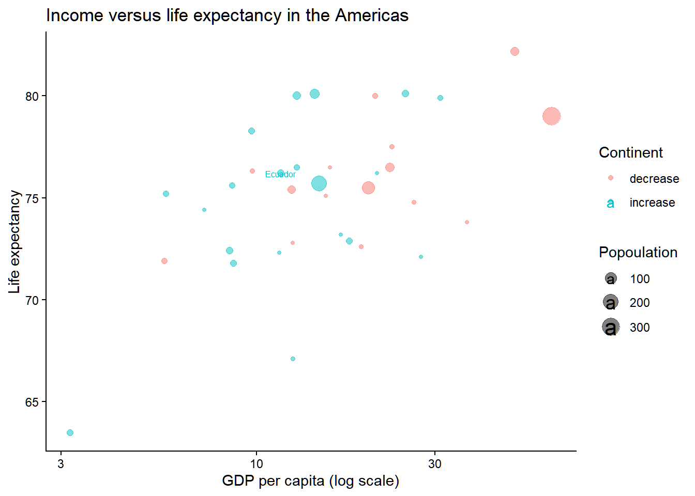
# save your plot # first put it in an object:p <-ggplot(gapminder_Am, aes(x = income, y = life_exp, color = co2_change , size = population)) +# add scatter pointsgeom_point(alpha =0.5) +# log-scale the x-axisscale_x_log10() +# change labelslabs(title ="Income versus life expectancy in 2007",x ="Income per capita (log scale)",y ="Life expectancy",size ="Popoulation",color ="Continent")+theme_classic() +geom_text( data=gapminder_Am %>%filter(country =="Ecuador"), # Filter data firstaes(label=country))plot(p)
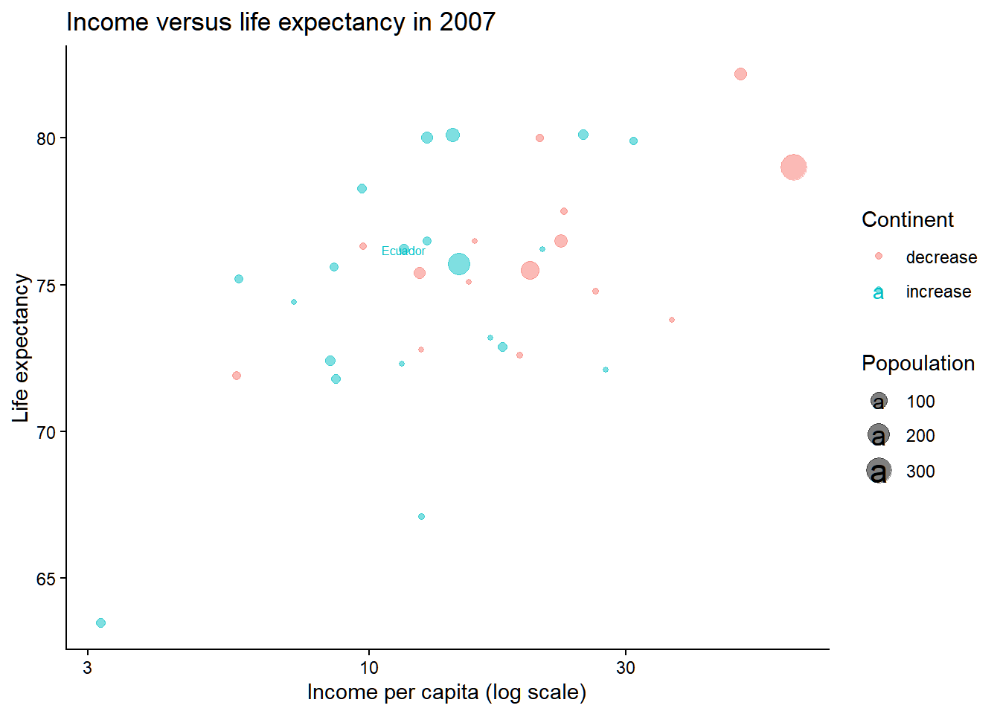
# # Save a plot# ggsave("Graphical_outputs/beautiful_plot.png", p, # dpi = 500, width = 10, height = 10)# you can also overlap things:# here, we have the initial point graph + a smoother lineggplot(gapminder_Am, aes(x = income, y = life_exp, color = co2_change , size = population)) +geom_point(alpha =0.5) +geom_smooth(se =FALSE, method ="loess", color ="grey30")
Warning: Using `size` aesthetic for lines was deprecated in ggplot2 3.4.0.
ℹ Please use `linewidth` instead.
`geom_smooth()` using formula = 'y ~ x'
Warning: The following aesthetics were dropped during statistical transformation: size.
ℹ This can happen when ggplot fails to infer the correct grouping structure in
the data.
ℹ Did you forget to specify a `group` aesthetic or to convert a numerical
variable into a factor?
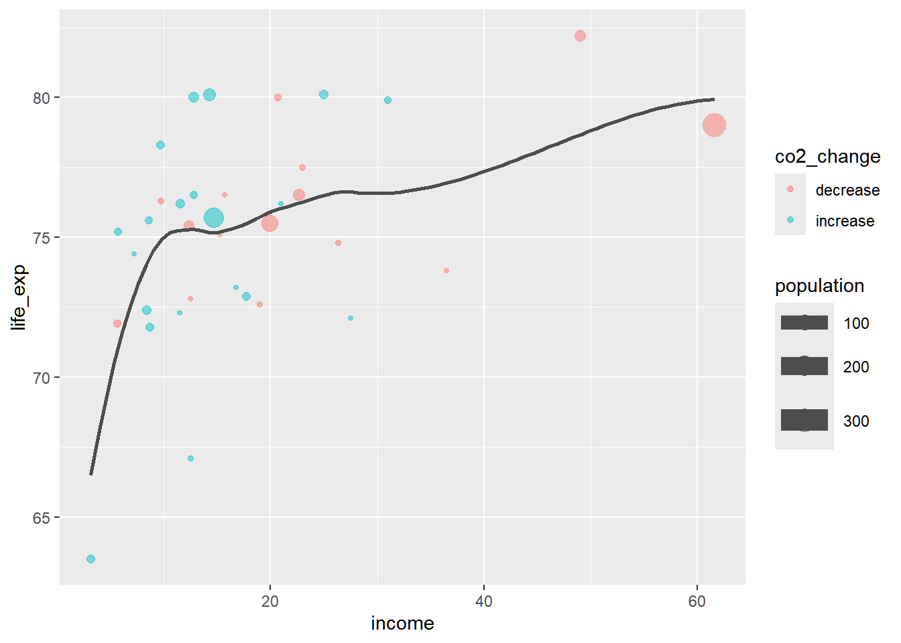
# 7.b Different types of plots# instead of points, you can create a line plot# (note how contents in the aes() change)ggplot(gapminder, aes(x = income, y = life_exp,color = region)) +geom_line(alpha =0.5)
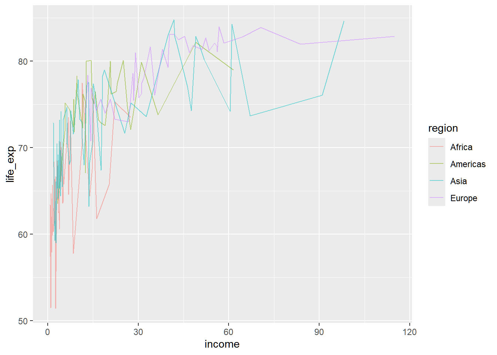
# a boxplot# (try replacing "fill" by "col")ggplot(gapminder, aes(x = region, y = co2, fill = region)) +geom_boxplot()
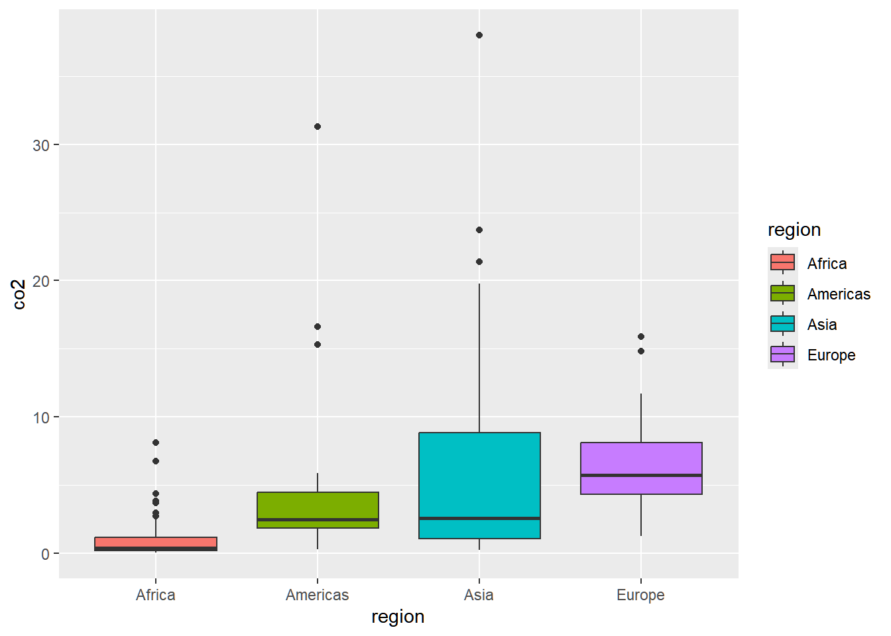
# a histogram# explore modifying the bindwidthggplot(gapminder, aes(x = co2)) +geom_histogram(binwidth =10)